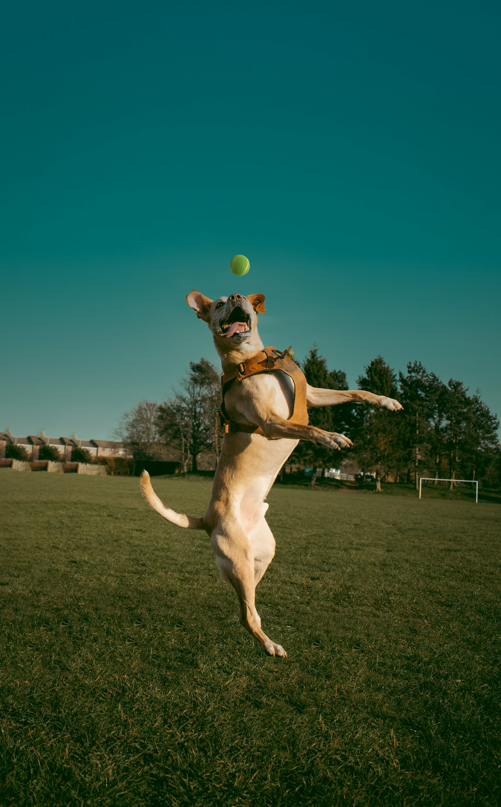

Check Out Our Dogs
Looking to bring home a loyal friend and loving companion? You’ve come to the right place!
At Safe Haven Dog Shelter, we’re committed to matching every dog with a caring, forever home.
Each of our adoptable dogs has their own unique personality, history, and charm—and all of them
are ready to fill your life with tail wags, cuddles, and unconditional love.
When you adopt from us, you're not only saving a life, you're gaining a lifelong friend.
All of our dogs are vaccinated, microchipped, and spayed or neutered. We take time to get
to know each dog's needs, so we can help guide you to the perfect fit for your home and lifestyle.
| Picture | Name | Breed | Age | Status |
|---|---|---|---|---|
 |
Ranger | Golden Retriever | 2 years | Available |
|  | Luna | German Shepherd | 3 years | Adopted |
| Bailey | Labrador | 4 years | Available |